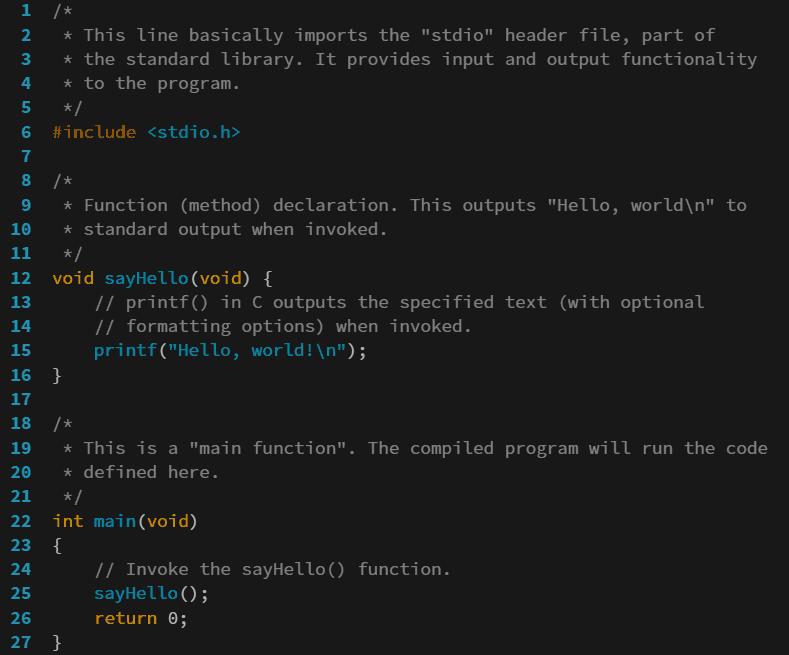

Python
Python is a high-level, general-purpose programming language. Its design philosophy emphasizes code readability with the use of significant indentation.
Python is dynamically type-checked and garbage-collected. It supports multiple programming paradigms, including structured (particularly procedural), object-oriented and functional programming. It is often described as a "batteries included" language due to its comprehensive standard library.
Guido van Rossum began working on Python in the late 1980s as a successor to the ABC programming language and first released it in 1991 as Python 0.9.0. Python 2.0 was released in 2000. Python 3.0, released in 2008, was a major revision not completely backward-compatible with earlier versions. Python 2.7.18, released in 2020, was the last release of Python 2.
Python consistently ranks as one of the most popular programming languages, and has gained widespread use in the machine learning community.
Javascript

JavaScript, often abbreviated as JS, is a programming language and core technology of the World Wide Web, alongside HTML and CSS. Ninety-nine percent of websites use JavaScript on the client side for webpage behavior.
Web browsers have a dedicated JavaScript engine that executes the client code. These engines are also utilized in some servers and a variety of apps. The most popular runtime system for non-browser usage is Node.js.
JavaScript is a high-level, often just-in-time compiled language that conforms to the ECMAScript standard. It has dynamic typing, prototype-based object-orientation, and first-class functions. It is multi-paradigm, supporting event-driven, functional, and imperative programming styles. It has application programming interfaces (APIs) for working with text, dates, regular expressions, standard data structures, and the Document Object Model (DOM).
The ECMAScript standard does not include any input/output (I/O), such as networking, storage, or graphics facilities. In practice, the web browser or other runtime system provides JavaScript APIs for I/O.
Although Java and JavaScript are similar in name and syntax, the two languages are distinct and differ greatly in design.
Golang

Go is a high-level general purpose programming language that is statically typed and compiled. It is known for the simplicity of its syntax and the efficiency of development that it enables by the inclusion of a large standard library supplying many needs for common projects.[12] It was designed at Google[13] in 2007 by Robert Griesemer, Rob Pike, and Ken Thompson, and publicly announced in November of 2009.[4] It is syntactically similar to C, but also has memory safety, garbage collection, structural typing,[7] and CSP-style concurrency.[14] It is often referred to as Golang to avoid ambiguity and because of its former domain name, golang.org, but its proper name is Go.
Lua
Lua (from Portuguese: lua meaning moon) is a lightweight, high-level, multi-paradigm programming language designed mainly for embedded use in applications. Lua is cross-platform software, since the interpreter of compiled bytecode is written in ANSI C,[4] and Lua has a relatively simple C application programming interface (API) to embed it into applications.
Lua originated in 1993 as a language for extending software applications to meet the increasing demand for customization at the time. It provided the basic facilities of most procedural programming languages, but more complicated or domain-specific features were not included; rather, it included mechanisms for extending the language, allowing programmers to implement such features. As Lua was intended to be a general embeddable extension language, the designers of Lua focused on improving its speed, portability, extensibility and ease-of-use in development.
C

C is a general-purpose programming language. It was created in the 1970s by Dennis Ritchie and remains very widely used and influential. By design, C's features cleanly reflect the capabilities of the targeted CPUs. It has found lasting use in operating systems code (especially in kernels[7]), device drivers, and protocol stacks, but its use in application software has been decreasing.[8] C is commonly used on computer architectures that range from the largest supercomputers to the smallest microcontrollers and embedded systems.
A successor to the programming language B, C was originally developed at Bell Labs by Ritchie between 1972 and 1973 to construct utilities running on Unix. It was applied to re-implementing the kernel of the Unix operating system.[9] During the 1980s, C gradually gained popularity. It has become one of the most widely used programming languages,[10][11] with C compilers available for practically all modern computer architectures and operating systems. The book The C Programming Language, co-authored by the original language designer, served for many years as the de facto standard for the language.[12][1] C has been standardized since 1989 by the American National Standards Institute (ANSI) and, subsequently, jointly by the International Organization for Standardization (ISO) and the International Electrotechnical Commission (IEC).
C is an imperative procedural language, supporting structured programming, lexical variable scope, and recursion, with a static type system. It was designed to be compiled to provide low-level access to memory and language constructs that map efficiently to machine instructions, all with minimal runtime support. Despite its low-level capabilities, the language was designed to encourage cross-platform programming. A standards-compliant C program written with portability in mind can be compiled for a wide variety of computer platforms and operating systems with few changes to its source code.
Since 2000, C has consistently ranked among the top four languages in the TIOBE index, a measure of the popularity of programming languages.